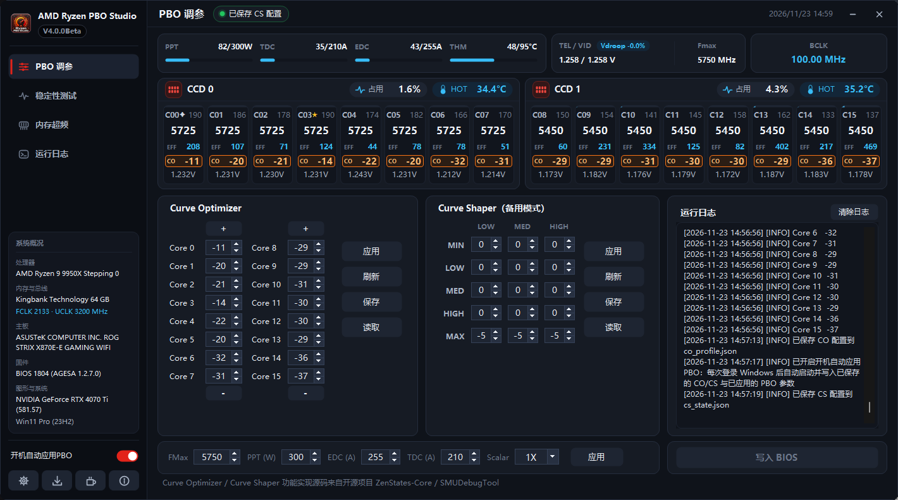
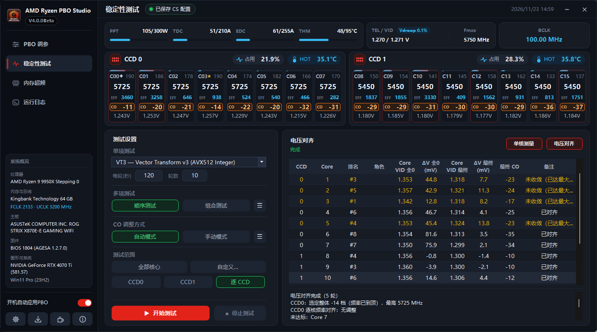
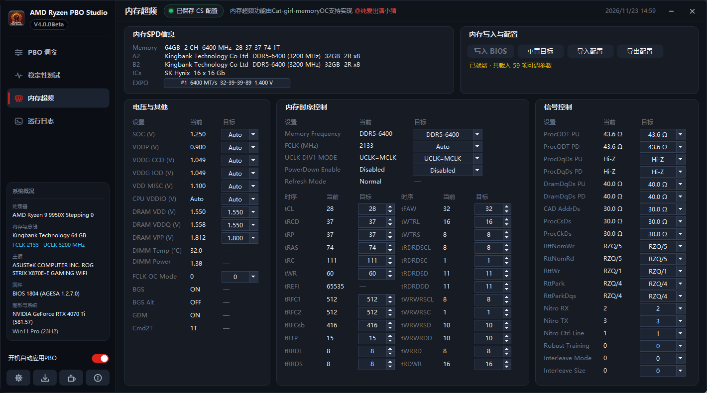

V4.0.0 Beta
AMD Ryzen
PBO Studio
适用于 AMD Ryzen 5000、7000 和 9000 系列的 Windows 调参工具。查看 CPU 与内存读数，调整 PBO、Curve Optimizer 和 Curve Shaper，运行 y-cruncher 稳定性测试，或编辑内存参数并写入 BIOS。


下载与安装
本手册对应 V4.0.0 Beta。请在程序「关于」中核对版本。GitHub Releases 会列出已公开的版本，3.x 与本手册中的界面和功能有差异。
运行要求
- 系统
- Windows 10 / 11 x64，管理员权限
- PBO / CO
- AMD Ryzen 5000 / 7000 / 9000 系
- 内存超频
- 本手册以 AM5 / DDR5 为例。可写项目由主板及当前 BIOS 暴露的 AMD Overclocking 接口决定。
- 驱动
- PawnIO，启动前必须安装
| 功能 | 5000 · Zen 3 | 7000 · Zen 4 | 9000 · Zen 5 |
|---|---|---|---|
| Curve Optimizer | 支持 | 支持 | 支持 |
| Curve Shaper | — | — | 支持 |
| PPT / EDC / TDC | 支持 | 支持 | 支持 |
| 修改 FMax | — | 支持 | 支持 |
| CPPC 核心排名 | 需在 BIOS 开启 CPPC | 支持 | 支持 |
选择发布包
如果发布页列有以下文件，首次安装选择 lite 或 net8contained。
-lite.zip- 含 y-cruncher，需要系统已安装 .NET 8 Desktop Runtime x64。
-net8contained.zip- 内置 .NET 8 和 y-cruncher，免装 .NET 8 Desktop Runtime。
-update.zip-net8patch-rt*.zip- 供程序内自动更新使用。
- 安装 PawnIO。如果选择了
lite包，确认已安装 .NET 8 Desktop Runtime x64。 - 完整解压软件包，保留 EXE、随附 DLL 和子目录。
- 以管理员身份运行
AMD Ryzen PBO Studio.exe，确认「PBO 调参」页能够显示 CPU 读数。
实时监控
左侧「系统概况」显示 CPU、内存容量和实时 FCLK / UCLK、主板型号、BIOS 与 AGESA 版本、显卡与驱动以及 Windows 版本。顶部监控在「PBO 调参」「稳定性测试」和「运行日志」页可见，切到「内存超频」时收起。
- 功耗、电流与温度
- PPT（封装功耗）、TDC（持续电流）、EDC（峰值电流）和 THM（温度）的当前值与上限。
- 电压与频率
- TEL / VID、Vdroop、FMax 和 BCLK。异步外频平台会分别显示 BCLK 与 BCLK2。
- CCD 与每核状态
- 按 CCD 显示平均占用率和热点温度。各核心显示 CPPC 排名（金核、银核标记）、频率、有效频率（EFF）、CO 和 Core VID。
想确认核心在一次测试中实际工作的频率，优先查看 EFF。Ryzen 5000 的 CPPC 一栏为空时，可检查 BIOS 是否已开启 CPPC。
PBO 调参
Curve Optimizer 与 Curve Shaper
Curve Optimizer（CO）按物理核心调整曲线偏移。可以逐核编辑，也可以用每列的 + / − 一起微调。Curve Shaper（CS）在支持的 Ryzen 9000 系上，按 5 个频率档（MIN、LOW、MED、HIGH、MAX）和 3 个温度档（LOW、MED、HIGH）调整曲线。
- 应用
- 写入当前编辑值，使本次运行生效。
- 刷新
- 从硬件重新读取当前值。
- 保存
- 将编辑值保存至
profiles\co_profile.json或profiles\cs_state.json。 - 读取
- 将已保存的配置载入编辑器。需要立即生效时再点「应用」。
频率、功耗、电流与 Scalar
页面底部可设置 FMax（MHz）、PPT（W）、EDC（A）、TDC（A）和 PBO Scalar（1X–10X），再点同行的「应用」。FMax 和 Scalar 依处理器及固件能力开放。测试开始时会记录当前 FMax / PPT / EDC / TDC，手动应用这些限制时也会更新记录，以便续跑恢复。
开机自动应用 PBO
稳定性测试通过后，先保存与当前 CPU 核心数匹配的 CO 配置，需要时保存 CS，再打开左侧「开机自动应用PBO」。每次登录 Windows 时，程序应用已保存的 CO 和支持的 CS，以及上次在 PBO 栏应用的 FMax / PPT / EDC / TDC。限制只写入与当前值有差异的项目，Scalar 由当前固件设置保留。
如果上次开机应用后不久发生异常重启，程序会跳过下一次应用。可在「运行日志」查看跳过原因并检查所保存的配置。
PBO 固件写入
「PBO 调参」中的「写入 BIOS」仅在台式机上提供。程序内解锁后，还需开启专家模式并停止测试或测量。程序会探测主板接口，预览可写的 PBO、CO、CS 项和跳过原因，确认后逐项下发，重启生效。以固件实际支持为准，非 Zen 5 平台会提示实验性支持。
部分固件在重启后可能无法保留正 CO 的符号。写入途中报错时，已接受的命令可能仍有效，请核对日志和 BIOS 后再操作。
稳定性测试


y-cruncher 测试计划
- 单项测试
- 选择 VT3、BKT、SVT、BBP、SFTv4、SNT、FFTv4、N63 或 YC018。常规项目可设每轮秒数和轮数。
- 顺序测试
- 完成一个项目的全部轮次后再进入下一项。默认依次运行 VT3 20 轮、BKT 10 轮、SVT 10 轮。可调整项目、顺序、轮数和每轮时长。
- 组合测试
- 每轮依次运行所选项目。默认轮换 VT3、BKT、SVT，共 10 轮。可调整项目、总轮数和统一的每轮时长。
测试范围可选全部核心或自定义物理核心。多 CCD 处理器还可指定单个 CCD或选择逐 CCD，依次完成各 CCD 的测试。多项计划和回退步长各有独立的设置按钮。运行时可点「停止测试」。
CO 自动与手动模式
先在「PBO 调参」应用要验证的 CO，再切到「稳定性测试」。
- 自动模式
- y-cruncher 提供报错核心时，程序将逻辑核心映射回物理核心，将对应 CO 加一个回退步长（默认 +2，可设 +1 至 +5），然后重跑当前项目或组合计划。若测试继续失败且触及 CO +30 上限，程序停止继续回退。
- 手动模式
- 检测到错误时提示并停止，保留当前 CO，便于手动排查 CPU 或内存设置。
全部轮次通过后，「运行日志」列出最终 CO 和可用的 Curve Shaper 数据。profiles\final_offsets.txt 保存测试计划、范围与通过的逐核 CO。单 CCD 测试通过后，再用全核测试验证整体配置。
单核测量与电压对齐
两项功能在测试页右侧，需要 CPU 支持 AVX2 / FMA。开始前请停下正在运行的压力测试。
- 单核测量
- 以当前 CO 逐核施加负载，记录频率、有效频率、VID 与 Core VID。测量保留当前调参值。
- 电压对齐
- 先统一起始 CO，再在各 CCD 选参考核心，逐步调整其他核心的 CO，使同频电压趋于一致，并寻找该 CCD 的单核频率平台。检测到运算错误的核心会回退。程序在过程中实时写入 CO，最后将结果填回编辑器。请通过压力测试验证后手动保存。
标准外频平台从 CO 0 开始。检测到升高的 CPU 外频时，可在确认窗口设置起始 CO。结果表和日志会显示每核测量与对齐状态，运行中可点「停止测试」。
YC018 与内存配置验证
YC018 是仅用于单项测试的内存密集型 Pi 基准，程序根据内存容量选择 25 亿、50 亿或 100 亿位规模，固定使用全核。轮数决定运行次数，每轮秒数和所选核心范围对 YC018 无效。若要单独排查内存配置，可固定 CO、使用手动模式，在重启后先确认实时频率与时序，再结合适合内存的稳定性测试验证。
内存超频


读数与可调参数
- 内存 SPD 信息
- 容量、通道数、频率、主时序、Cmd2T、各插槽型号和容量、颗粒厂商，以及从 SPD 读取的 EXPO 档位。
- 电压与其他
- SoC、VDDP、VDDG CCD / IOD、VDD MISC、CPU VDDIO、DRAM VDD / VDDQ / VPP 与 FCLK OC Mode。还显示只读的 BGS、BGS Alt、GDM、Cmd2T，以及硬件可提供的 DIMM 平均温度和功耗。悬停可查看单条 DIMM 读数。
- 内存时序控制
- 内存频率、FCLK、UCLK DIV1 MODE、PowerDown Enable、Refresh Mode，以及控制器读出的主、次和其他时序。显示可编辑项取决于 BIOS。
- 信号控制
- ProcODT、驱动强度、Rtt 终端电阻、Nitro RX / TX / Ctrl Line、Robust Training 和 Interleave 等。
实时电压与 DIMM 数据根据硬件可用性显示，内存页约每 2 秒更新。可调项目数量与操作状态显示在「内存写入与配置」区。
读取 SPD，填写目标值
- 打开「内存超频」，查看内存型号、颗粒、EXPO 配置和已加载的可调项目。表格并排显示「当前」和「目标」，蓝色目标值表示待写入修改。
- 点击 SPD 区的 EXPO，可填入可用的内存频率、主时序、刷新时序、DRAM VDD / VDDQ、CPU VDDIO 和 Nitro 参数。再次点击同一档位可撤销这次填充。
- 也可逐项编辑，或点「导入配置」载入本程序导出的 JSON、Cat-girl memoryOC 独立内存配置或组合配置中的内存部分。状态栏会列出未被载入的项目。「重置目标」将编辑区恢复为当前 BIOS 设置。
- 点「导出配置」将目标值保存为 JSON，默认目录为
dram\。文件名按可用信息带上平台、内存频率、CL 与颗粒厂商。
EXPO、导入和编辑都只更新目标值。预设能否稳定运行取决于处理器、主板、BIOS 和内存条组合。
写入 BIOS 并重启
- 打开左下角齿轮「设置」，在「常规」中开启「专家模式」。
- 如果
CPU VDDIO目标仍是Auto，先按本机配置指定目标值。程序的 CPU VDDIO 上限为1.500 V。点击「写入 BIOS」，核对确认窗口列出的改动及异常值提示。 - 确认后，程序会核对固件接口与相关参数，保存
profiles\memory_backup_<时间>.json，再通过主板的 AMD_ACPI WMI 接口逐项写入和回读。校验或备份失败时，程序会在写入前停止。 - 确认写入结果后重启电脑，等待内存训练完成。回到软件查看频率、时序等实时读数，再进行稳定性测试。
若中途报错，之前的部分项目可能已写入。先根据「运行日志」和回读结果确认状态，再决定如何恢复。
日志与恢复
查看日志和配置文件
「运行日志」提供完整日志，「PBO 调参」页右侧同步显示。日志记录 y-cruncher 的轮次、耗时与速度、出错核心映射、CO 回退和 BIOS 写入结果。「清除日志」只清空界面显示，磁盘日志仍可在 logs\ 中查看。
logs\- 程序会话、y-cruncher 输出，以及
acpi-command-trace.jsonl中的固件命令和返回结果。 profiles\- CO 与 CS 配置、测试计划和最终结果、写入历史、恢复点、程序设置及内存 BIOS 备份。
dram\- 内存 JSON 的默认导入与导出目录。若软件包带预设，也在此目录。
异常重启后继续测试
程序会保存测试计划、阶段、核心范围和 CO 历史。遇到死机或断电，登录 Windows 后，启动任务会尝试恢复测试。程序优先处理未完成的测试，恢复中断阶段、已记录的 PBO 限制与支持的 CS，并将启用核心的 CO 各回退一步。如果重启后手动应用过 CO，再续跑会沿用手动值。
常规模式下，自动恢复前有 30 秒倒计时，可以取消。连续自动续跑 10 次仍异常重启后，需要手动处理。取消续跑会保留恢复点，也可以在「稳定性测试」点「开始测试」继续。无人值守续跑需要 Windows 能自动登录。
设置与更新
常规、监控与数据
点左下角齿轮打开「设置」。
- 常规
- 选择界面语言和退出前确认。专家模式会跳过常规测试、恢复和开机应用提示，并解锁内存页的「写入 BIOS」。写入确认仍会显示。
- 监控
- 设置 CPU 监控刷新间隔，范围 100–10,000 ms，默认 500 ms。
- 数据
- 快捷打开
profiles与logs文件夹。
程序默认跟随 Windows 显示语言，内置英文，并随附简体中文、繁体中文、日语、韩语、德语、西班牙语、法语、巴西葡萄牙语和俄语。找不到对应翻译时使用英文，切换语言后需重启程序。
检查更新与工具栏
设置中可开启「启动时自动检查更新」，也可用左下角的下载图标手动检查。程序读取 GitHub 的最新正式版本与更新说明，可选择升级或跳过该版本。更新器按有无内置 .NET 8 选包，完成后重启程序，保留日志和配置。覆盖失败时尝试从备份恢复。
左下角的「关于」显示软件版本与作者信息。咖啡杯图标打开自愿赞助窗口。
常见问题
软件无法启动
确认使用 Windows x64，已安装 PawnIO，并以管理员身份运行。若使用 lite，确认安装的是 .NET 8 Desktop Runtime x64。若缺少 DLL，请完整重新解压。
内存写入按钮不可用，或可调项目为零
先确认已开启「专家模式」。若仍无可调项目，请查看状态栏与「运行日志」中的 BIOS 接口探测结果，核对主板型号与 BIOS 版本。不同主板及固件可写项目不同。
写入后还能开机，如何恢复原配置？
在「导入配置」选择 profiles\memory_backup_*.json，核对可恢复的数值后再写入并重启。已写入为手动值的参数如需恢复成 Auto，请进入主板 BIOS 恢复。
重启后黑屏，无法进入 BIOS 或 Windows
先按主板手册预留内存训练时间。若仍无法完成开机自检，按主板或整机厂商的说明清除 CMOS 或恢复 BIOS 默认设置。笔记本没有外部恢复入口时，请按整机手册处理或联系厂商。软件恢复需要能进入 Windows。
反馈问题
反馈时请提供软件版本、CPU、主板、BIOS 版本、复现步骤及相关日志片段。